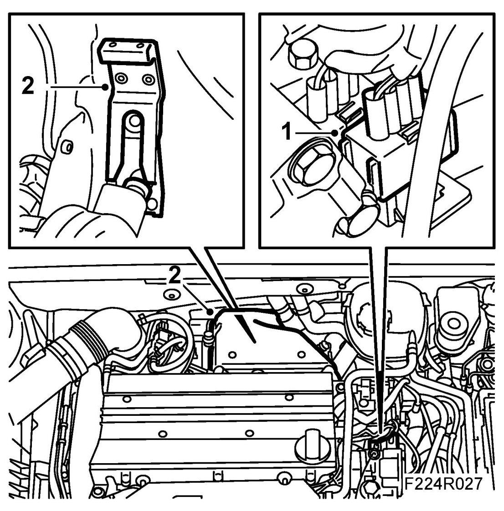
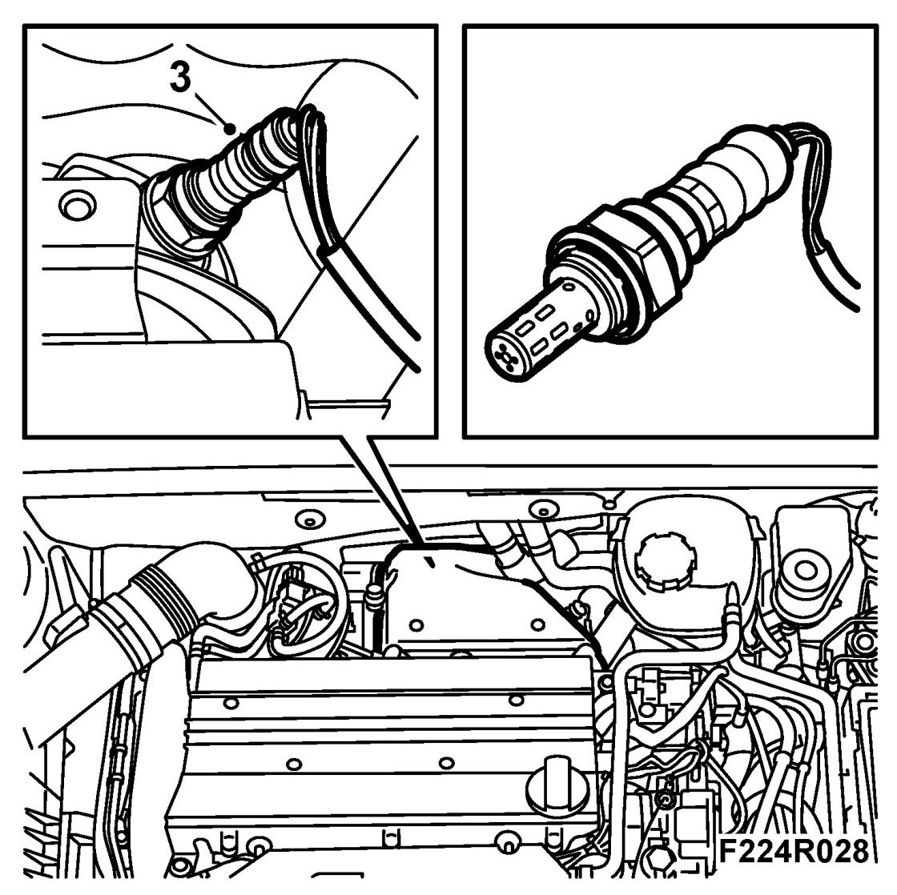
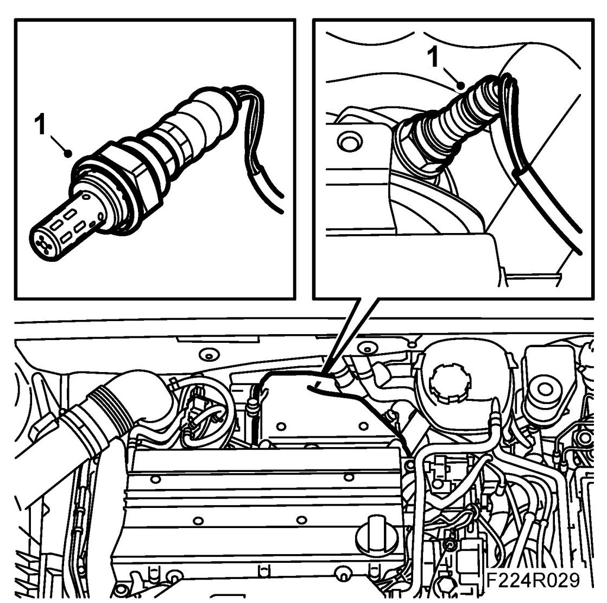
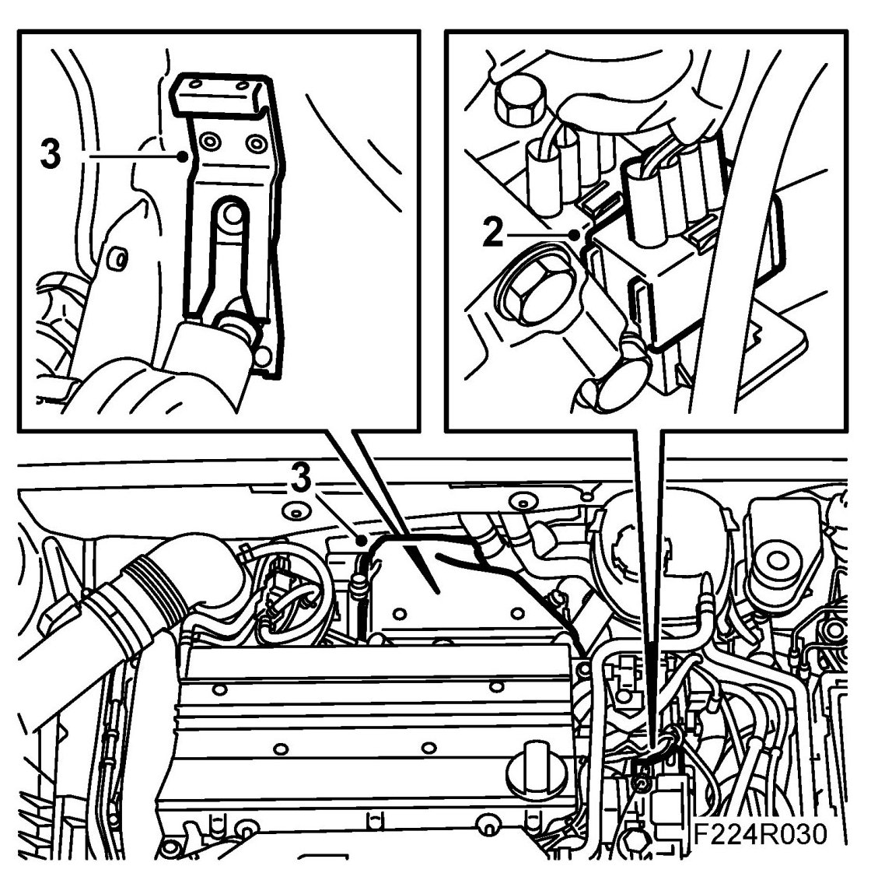

Heated Oxygen Sensor, Upper (592), B207
Heated Oxygen Sensor, Upper (592), B207
WARNING: The exhaust pipe from the turbocharger can be extremely hot. Proceed with caution.
To remove
1. Unplug the oxygen sensor and carefully lower the cable.

2. Remove the heat shield over the turbocharger (note the clip underneath the heat shield, see illustration).
3. Remove the oxygen sensor.

To fit
1. Lubricate the threads sparingly with 30 20 971 Screw-thread paste and fit the oxygen sensor.

Tightening torque 40 Nm (30 lbf ft).
2. Plug in the oxygen sensor connector and secure it.

3. Fit the turbocharger heat shield (note the clip underneath the heat shield, see illustration).